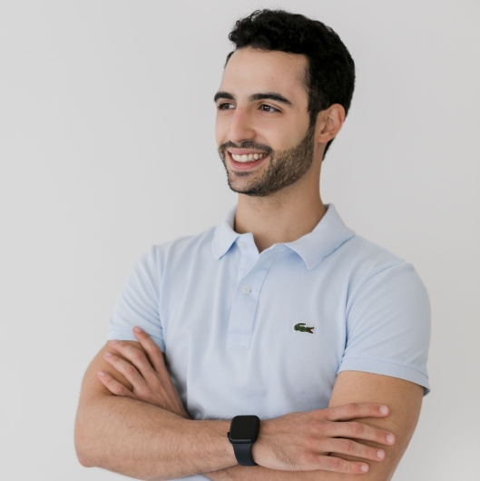
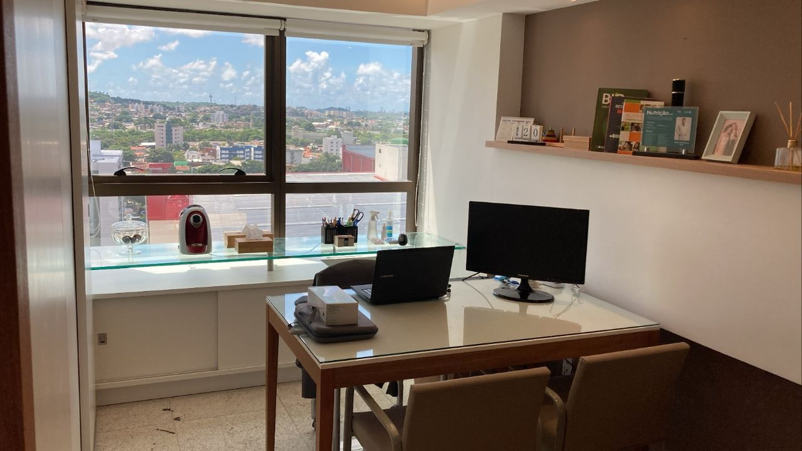
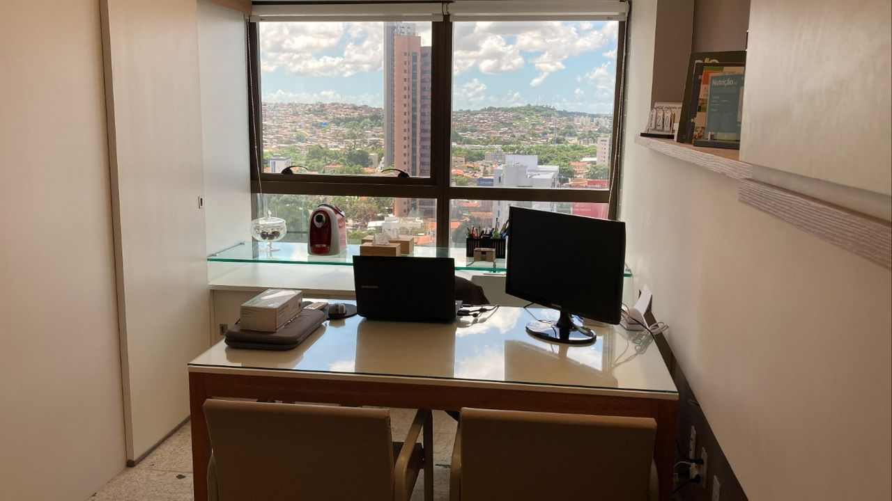
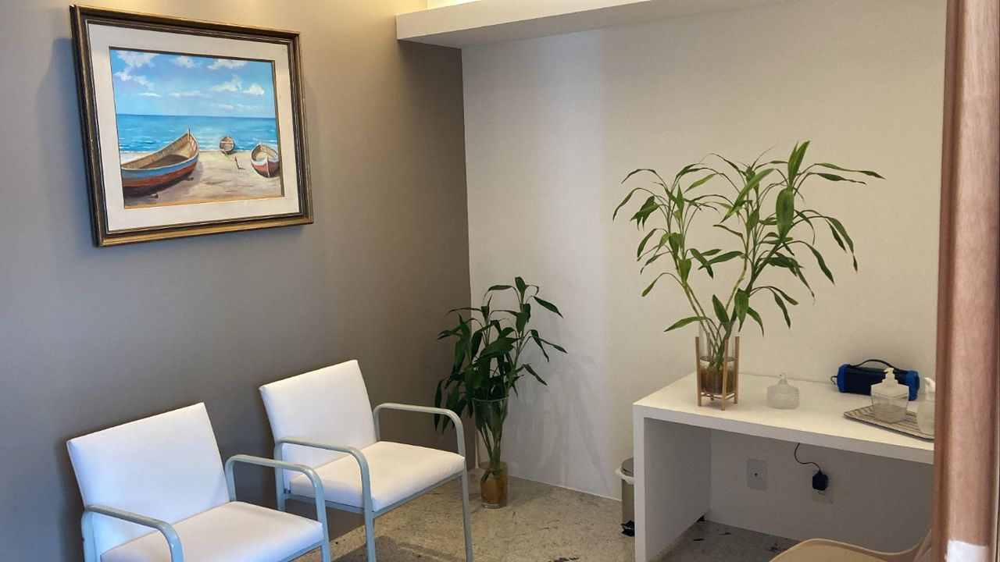

Nutrição clínica e esportiva · Recife
Dieta sem sofrimento.
Resultado além da balança.
Consulta completa, individualizada e construída com você — não para você. Anamnese, avaliação física, plano alimentar no aplicativo e acompanhamento real entre as consultas.
- 170
- avaliações no Doctoralia
- +700
- vidas acompanhadas
- 2
- formatos: presencial e online


Sobre o atendimento
Consulta centrada em quem come — não na dieta pronta.
Pedro atua nas áreas de nutrição clínica e esportiva, atendendo demandas como emagrecimento, ganho de peso, hipertrofia e atletas, além de condições clínicas como obesidade, hipertensão, diabetes e dislipidemias.
O plano alimentar é construído junto ao paciente, durante a própria consulta — levando em conta hábitos, rotina e realidade de cada um. É esse cuidado que aparece nas avaliações: atenção aos detalhes, escuta de verdade e um plano que cabe na vida, não o contrário.
Falar com PedroDo agendamento ao resultado
O que tem dentro de uma consulta
Nada de plano genérico. Cada etapa existe para que a orientação saia sob medida — e continue funcionando depois que você sai do consultório.
- 01
Anamnese completa
Histórico de saúde, rotina, relação com a comida e objetivos reais.
- 02
Avaliação física e nutricional
Medidas e composição corporal — sem reduzir você a um número na balança.
- 03
Análise de exames
Leitura ou solicitação de exames para embasar cada decisão do plano.
- 04
Plano alimentar no app
Montado com você, na consulta, e disponível no celular no dia a dia.
- 05
Suplementação, se necessário
Prescrição pontual, apenas quando faz sentido para o seu caso.
- 06
Acompanhamento pós-consulta
Ajustes e suporte entre uma consulta e outra — o plano evolui com você.
Especialidades em destaque
Um plano para cada motivo que te trouxe até aqui
Nutrição Esportiva
Performance e recuperação para atletas e praticantes de atividade física.
AgendarEmagrecimento
Reeducação alimentar sem restrições desnecessárias, no seu ritmo.
AgendarNutrição Clínica
Diabetes, hipertensão, dislipidemias, doença renal crônica e outras condições.
AgendarNutrição da Mulher
Atendimento com olhar específico para as fases da saúde feminina.
AgendarComportamento Alimentar
Compulsão alimentar, ansiedade e transtornos alimentares, com apoio humanizado.
AgendarNutrição Funcional
Investigação de deficiências nutricionais a partir de exames.
AgendarPlanos de acompanhamento
Da consulta avulsa ao acompanhamento contínuo
De uma sessão pontual a uma mudança de hábito consolidada ao longo dos meses, com o plano alimentar sempre disponível no aplicativo entre as consultas.
A partir de R$ 300
Primeira consulta completa: o ponto de partida para conhecer o método antes de seguir para um plano contínuo.
- Anamnese e avaliação completas
- Plano alimentar personalizado no app
- Presencial ou por teleconsulta
Sob consulta
Retornos regulares para ajustar o plano conforme sua resposta e consolidar a nova rotina alimentar.
- Consultas de retorno incluídas
- Ajustes de plano ao longo dos 3 meses
- Suporte entre consultas
Sob consulta
Acompanhamento estendido para quem quer consolidar resultado e hábito de forma sustentável, sem pressa.
- Acompanhamento contínuo de 6 meses
- Revisões periódicas do plano
- Indicado para objetivos de longo prazo
Atendimento particular — não são aceitos convênios. Pagamento em dinheiro, boleto ou transferência. Valores dos planos de acompanhamento são combinados diretamente com Pedro pelo WhatsApp.
E-book gratuito
Como introduzir frutas na alimentação
E-book gratuito
Como escolher bons suplementos
Prova social
170 avaliações no Doctoralia
“Extremamente atencioso, prestativo e demonstra um cuidado enorme com os pacientes. Durante as consultas, transmite muita tranquilidade e explica tudo de forma clara. Recomendo de olhos fechados!”
“Profissional atencioso, detalhista, se preocupa com você, faz sua dieta de acordo com o que você já come no seu dia a dia — e fazendo tudo certinho, obtemos o resultado!”
“Atendimento muito personalizado, sempre atende a necessidade específica de cada paciente e o seu objetivo.”
“Foi consulta on-line, mas super atencioso — sempre procurava me orientar pelo WhatsApp e perguntava sobre a evolução.”
“Conseguimos alinhar meus objetivos e necessidades de forma clara.”
“Atendimento verdadeiramente personalizado, adaptado à realidade do paciente.”
Onde e como atender
Presencial em Recife ou por teleconsulta, de onde você estiver
Consultório
R. José Carvalheira, 100 – Sala 1006
Tamarineira, Graças – Recife/PE, 52051-060
Teleconsulta
Atendimento por videochamada para todo o Brasil, com o mesmo padrão de consulta presencial.
Pagamento
Dinheiro, boleto ou transferência bancária. Atendimento particular — convênios não são aceitos.


🍽️ Dieta sem sofrimento
Chega de plano que não cabe na sua rotina.
Fale com Pedro agora e agende sua consulta — presencial em Recife ou por teleconsulta.
Agendar consulta no WhatsApp